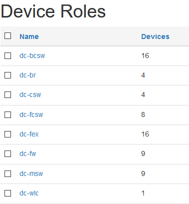

NetBox and Oxidized integration
27 Dec 2017In our company we use NetBox to manage devices information, such as IP addresses, serial numbers, etc., Oxidized/GitLab to store device configuration files, Zabbix to monitor everything and Confluence for any other documentation.
Earlier, when we connected a new device to the network, we needed to manually add it at least to the listed systems.
Fortunately, NetBox has an excellent API (this was one of the criteria by which I chose him), that allows us to automate some routine.
First we grouped all our devices according to their roles. For example, for data center devices it looks like this:  For all devices at least the following fields must be filled in:
- Primary IPv4 (for ssh to device);
- Platform (to use correct library in Oxidized);
- Status (we need to store configuration files only from the Active devices);
- Custom Field: Authorization Type (some of devices have only local credentials and can not be managed with TACACS+);
- Custom Field: Web Only (some of devices are managed only through the web interface).
Then I wrote my own python library to work with the NetBox API (mainly for education purposes).
To export devices inventory from NetBox I also wrote the separate script. It filters out unsuitable device types (for example, Cisco FEX, which managed from the N5k core switches, or APC UPS) and forms two files:
- Inventory file in CSV format;
- /etc/hosts file to locally map hostnames and IP addresses.
Example of the line in inventory file:
dc-br01-1:ios-xe:lan/dc-br
In Oxidized configuration file we have the next settings:
<output omitted>
input:
default: ssh
debug: false
ssh:
secure: false
output:
default: file
file:
directory: /opt/oxidized/group
source:
default: csv
csv:
file: /opt/oxidized/inventory
delimiter: !ruby/regexp /:/
gpg: false
gpg_password: password
map:
name: 0
model: 1
group: 2
model_map:
ios-xe: ios
nx-os: nxos
hooks:
node_failed:
type: exec
events: [node_fail]
cmd: echo Failed to get configuration from $OX_NODE_NAME - $OX_NODE_IP via SSH | mutt -s "[ALERT] Connection to $OX_NODE_NAME via SSH failed" noc@site.ru -e "my_hdr From:oxidized@site.ru"
So when Oxidized getting configuration of devices listed in the inventory file, it creates the following directories, each containing the corresponding files:
tree -L 1 /opt/oxidized/lan
/opt/oxidized/lan
├── dc-bcsw
├── dc-br
├── dc-csw
├── dc-fw
├── dc-msw
├── dc-wlc
<output omitted>
Crontab on the Oxidized server contains the following lines:
01 11 * * * python3 /mnt/python-scripts/NetBoxPython/NetBoxToOxidizedExport.py
05 11 * * * systemctl restart oxidized
01 12 * * * cd /opt/oxidized/lan && ./git_autopush
It means, that inventory file generates every day.
Also,git_autopushis the small and simple bash script, that automatically push all changes to GitLab for easy viewing and daily e-mails to NOC team.
cat /opt/oxidized/lan/git_autopush
git add . -A
curtime=`date`
git commit -m "Automatic Backup @ $curtime"
git push origin master